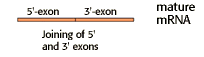

Eukaryotic Gene Expression Problem Set
Problem 6 Tutorial: Interpreting a pre-mRNA splicing diagram
| The regions labeled A and C of the diagram are ___________________. |

|
Tutorial
| Splicing in the eukaryotic nucleus is catalyzed by spliceosomes, which are large RNA-protein complexes. | |
|
The RNA components of the spliceosome, known "snRNAs," participate directly in splicing reaction by interaction with intron consensus sequences and with each other.
There are six major types of snRNAs, which complex with proteins to forms snRNPs. As suggested by the diagram, the snRNPs assemble on the pre-mRNA to form the spliceosome. |
|
| RNA splicing occurs by a 2-step mechanism: | |
|
Step 1:
Cleavage of 5' exon-intron boundary and formation of intron-lariat; This is the first of two phosphodiester transfer reactions. |

|
|
Step 2:
Joining of 5' and 3' exons together and release of the intron as lariat RNA, which is second phosphodiester transfer reaction. |
 |


University of Arizona
Monday, October 27, 1997
Contact the Development Team
http://www.biology.arizona.edu
All contents copyright © 1997. All rights reserved.